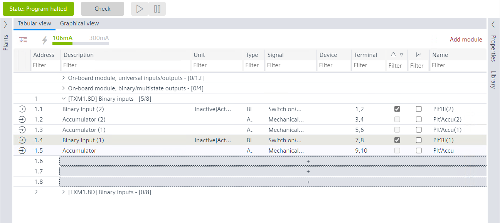

启用内在警报
仅适用于支持报警的设备。
Upgrading alarming
您可以为选定的数据点启用内在警报。当启用内在警报时，内在报告特定属性变得可用。要启用内在警报，请设置Enable event财产给Yes.

当禁用内在警报并再次启用时，属性值将设置回默认值。
Enable intrinsic alarming in the Property view
- Go to Building > Building structure.
- Right-click an automation station and select Go to engineering.
- Open the I/O configuration task.
- Select a data point and open the Properties view
- Set the Enable event property to Yes.
- Intrinsic alarming is enabled.
Enable intrinsic alarming in the Table view
- Go to Building > Building structure.
- Right-click an automation station an select Go to engineering.
- Open the I/O configuration task.
- Select Tabular view.
- Select a data point.
- In the alarm column which is indicated by the symbol, select the check box.
- Intrinsic alarming is enabled.
